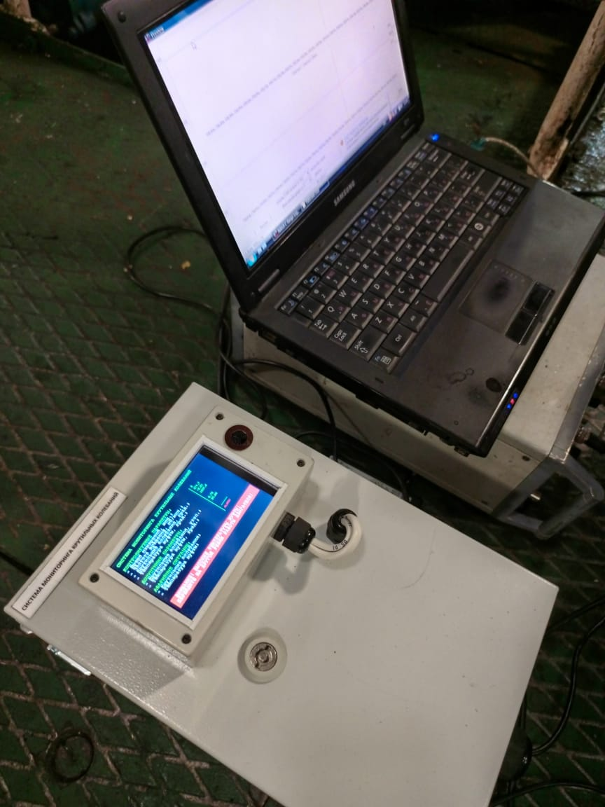
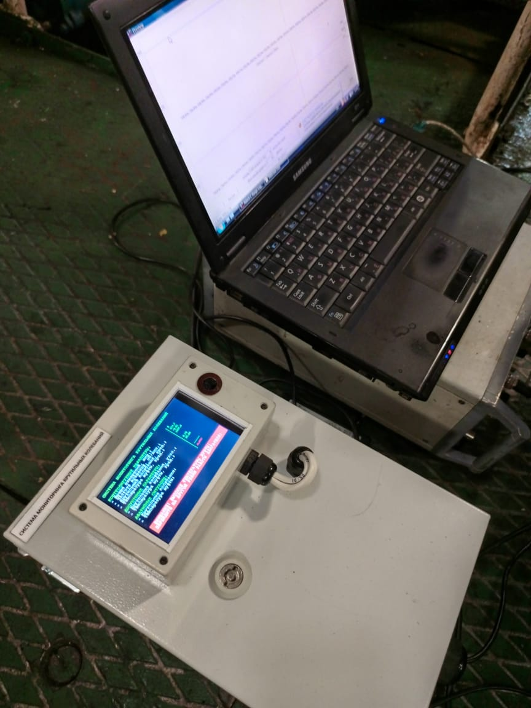

Полный комплекс услуг
Измерения крутильных колебаний судовых валопроводов главных энергетических установок и вспомогательных агрегатов. Амплитуда крутильных колебаний. Напряжения от крутильных колебаний. Виброакустические измерения и испытания. Измерения параметров вибрации корпуса, судовых технических средств и оборудования на судах и плавучих объектах.Измерение параметров крутильных колебаний судовых движительных установок, двигателей, дизель-генераторных, дизель-редукторных, дизель-компрессорных и дизель-насосных агрегатов.Диагностика технического состояния демпферов крутильных колебаний.
 

Новости отрасли
25 декабря 2023г
В музее бюро "Малахит" появился макет первой советской АПЛ "Ленинский комсомол" Установка макета приурочена к 75-летию проектной организации и 65-летию со дня подписания приемного акта К-3. 25 Декабря 2023 Санкт-Петербургское морское бюро машиностроения "Малахит" (СПМБМ «Малахит»), ОАО
25 декабря 2023г
Состав ВМФ России пополнили три корабля Церемонии подъема Военно-морского флага прошли на фрегате "Адмирал Головко", малом ракетном корабле "Наро-Фоминск" и тральщике "Лев Чернавин".Декабря 2023 Судостроительный завод "Северная верфь", ПАО
25 декабря 2023г
На Адмиралтейских верфях началась резка металла для научно-экспедиционного судна "Иван Фролов" Судно должно стать новым флагманом флота ААНИИ в 2028 году.
Новости Центра и партнеров
9 августа 2023
проведено торсиографирование судна Габдулла Тукай, пр. 1565А в соотвествии с договором с ООО "ДФ "ВТС-БРОКЕР"
16 августа 2023
проведено торсиографирование судна ВТС-1 тип СТК прект 326.1 в соответствии с договором с ООО "ДФ "ВТС-БРОКЕР"
30 октября 2023
проведено торсиографирование РТ-338 проекта 911В в соответствии с договором с ООО "РТМ"
Статьи/объявления
22 декабря 2023г
На кафедре эксплуатации водного транспорта и промышленного рыболовства Астраханского государственного технического университета состоялось рассмотрение диссертации на тему: "Разработка системы мониторинга крутильных колебаний для повышения безопасности эксплуатации судового машинно-движительного комплекса" на соискание учёной степени доктора технических наук по специальности 2.5.20 "Судовые энергетические установки и их элементы (главные и вспомогательные) инженера-технолога экспертной группы Испытательного центра "Marine Technology Service"
Наши преимущества
Экономия. Вы платите реальную стоимость работ
Наличие собственного оборудования и штата профессиональных испытателей
Мы — аккредитованный Центр с опытом работы с 1999 года
Нам доверяют крупнейшие судовладельцы и судоходные компании
Квалифицированный штат экспертов и испытателей, обладающий многолетним практическим опытом